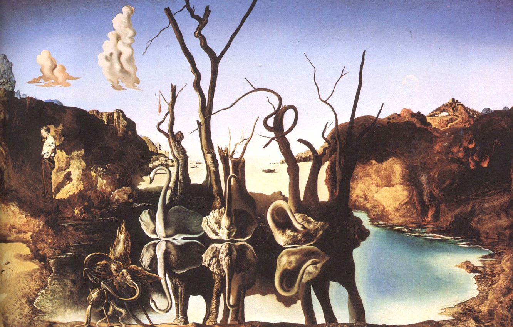
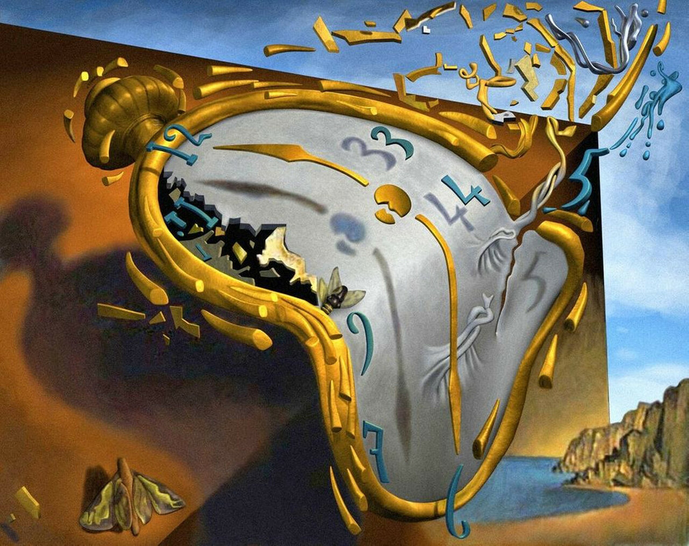
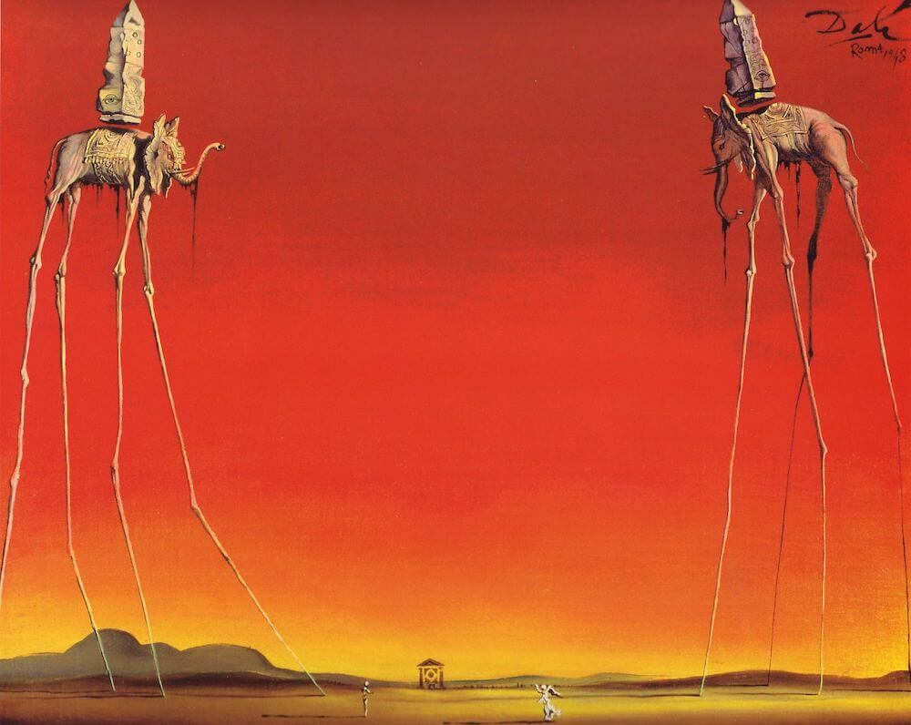

Творби

1.

2.

3.

4.
Салвадор Дали
1904г. - 1989г.
Салвадор Фелипе Хасинто Дали и Доменек, по-известен като Салвадор Дали е испански художник, представител на сюрреализма. Голяма част от неговите произведения са световноизвестни, а вдъхновение получава и от Ренесансовите майстори. Често наричан твърде ексцентричен и провокативен, Салвадор Дали привлича общественото внимание с визията си. Изключително много обича лукса и ориенталската мода, дори си измисля арабско потекло.